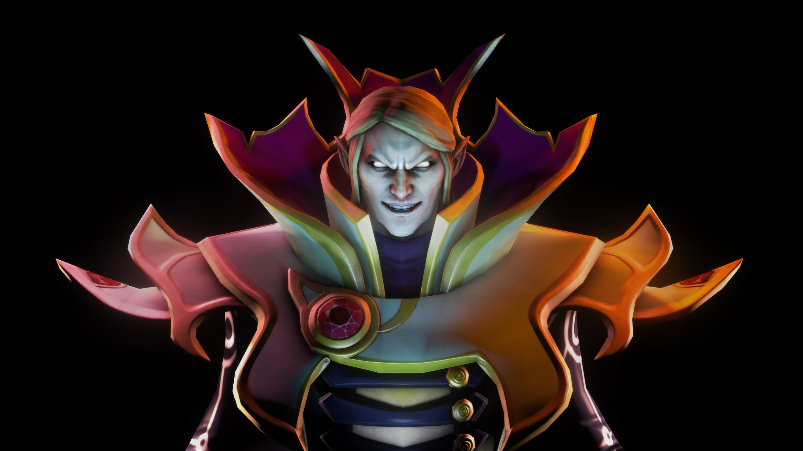

Invoker
O mago com 10 habilidades diferentes. Um dos heróis mais complexos e versáteis do jogo.
Função: Mago / Nuker
O jogo que define o gênero MOBA
Dota 2 é um jogo eletrônico do gênero MOBA (Multiplayer Online Battle Arena) desenvolvido pela Valve Corporation. Lançado em 2013, é o sucessor do famoso mod de Warcraft III, Defense of the Ancients (DotA).
No jogo, duas equipes de cinco jogadores competem para destruir a base inimiga, cada um controlando um herói com habilidades únicas. Com mais de 100 heróis disponíveis, cada partida é única e estratégica.
O mago com 10 habilidades diferentes. Um dos heróis mais complexos e versáteis do jogo.
Função: Mago / Nuker
Famoso por seu Meat Hook, puxando inimigos para perto. Ícone do Dota desde o primeiro jogo.
Função: Tank / Iniciador
A suporte por excelência, com habilidades de gelo que controlam o campo de batalha.
Função: Suporte / Controle